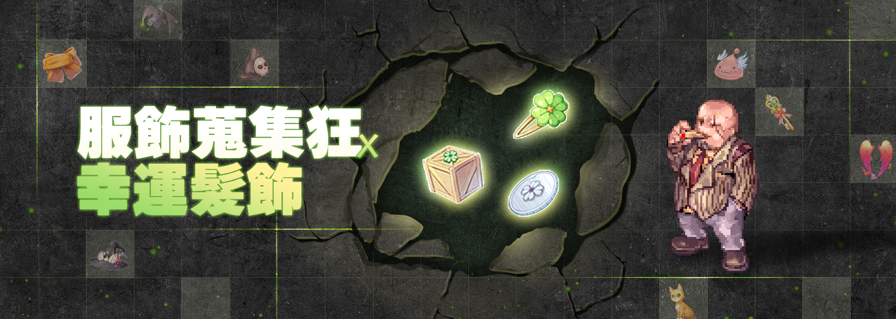
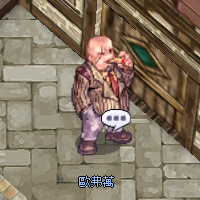
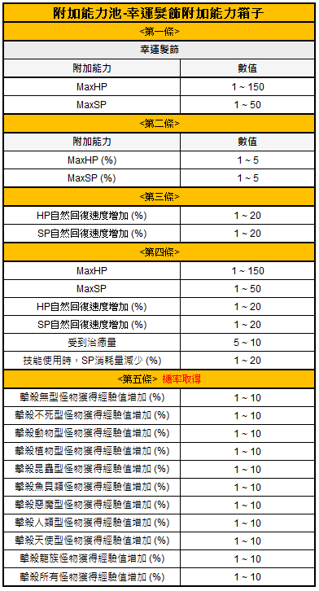
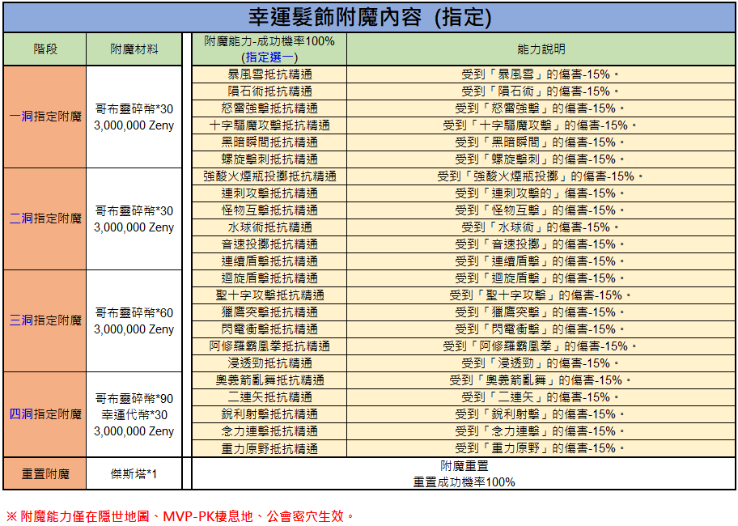

Lucky Hairband & Costume Collector Ofuman (服飾蒐集狂-歐弗萬)
Ein Costume-Recycling-NPC mit Lucky Hairband-System: tausche nicht benötigte Kostüme in Lucky Coins, kaufe Enchant-Boxen und apply exklusive Hairband-Enchants.
✨ Was ist neu?

Ein Werbebanner für ein Ragnarok Zero Event, das sich auf das Sammeln von Kostümen und das Lucky Hairband konzentriert.
- Kostüm-Sammler-Wahn
- Lucky Hairband
Der Text im Bild lautet '服飾蒐集狂 x 幸運髮飾', was 'Costume Collector Mania x Lucky Hairband' bedeutet.
📍 NPC & Standort
Ofuman (歐弗萬) — Costume-Sammler
Position: prontera 239 267
Navigate: /navi prontera 239/267

Dies ist ein Bild des NPC namens Olevan.
- Olevan
Dies ist ein NPC-Charakter-Sprite ohne weitere UI-Elemente.
🔄 Services
1. Lucky Coins tauschen
- 1 × Non-Bound Costume → 1 × Lucky Coin (幸運代幣)
- 3 × Bound Costumes → 1 × Lucky Coin-Bound (幸運代幣-歸屬)
2. Enchant-Boxen kaufen
- Lucky Hairband Enchant Box: 1 × Lucky Coin + 1 × Goblin Shard
- Lucky Hairband Enchant Box (Bound-Variante): 1 × Lucky Coin-Bound + 2 × Goblin Shards
- Lucky Hairband: 100.000 Zeny
3. Hairband enchanten
Ofuman enchanted den Lucky Hairband exklusiv — wahlweise mit gezieltem (指定) oder zufälligem (隨機) Enchant-Verfahren.

Ein In-Game-Infofenster für das Item Lucky Hairband.
- Name: Lucky Hairband
- Beschreibung: Ein Haarband, von dem man sagt, dass es seinem Träger Glück bringt.
- Typ: Accessory
- Position: Accessory (Left)
- Gewicht: 0
- Benötigtes Level: 1
- Klasse: Alle Klassen
- Besonderheit: Account-gebunden
Das Item ist aktuell nicht handelbar.
🎁 Lucky Hairband Enchant Box
Reward-Pool der Enchant-Boxen:

Diese Tabelle listet die möglichen Zusatzeffekte und deren Wertebereiche für das Lucky Hairband auf, unterteilt in fünf Kategorien.
| Zusatzeffekt | Wert |
|---|---|
| MaxHP | 1 ~ 150 |
| MaxSP | 1 ~ 50 |
| MaxHP (%) | 1 ~ 5 |
| MaxSP (%) | 1 ~ 5 |
| HP Recovery Rate (%) | 1 ~ 20 |
| SP Recovery Rate (%) | 1 ~ 20 |
| MaxHP | 1 ~ 150 |
| MaxSP | 1 ~ 50 |
| HP Recovery Rate (%) | 1 ~ 20 |
| SP Recovery Rate (%) | 1 ~ 20 |
| Received Healing (%) | 5 ~ 10 |
| SP Consumption (%) | 1 ~ 20 |
| Exp bonus vs Formless (%) | 1 ~ 10 |
| Exp bonus vs Undead (%) | 1 ~ 10 |
| Exp bonus vs Brute (%) | 1 ~ 10 |
| Exp bonus vs Plant (%) | 1 ~ 10 |
| Exp bonus vs Insect (%) | 1 ~ 10 |
| Exp bonus vs Fish (%) | 1 ~ 10 |
| Exp bonus vs Demon (%) | 1 ~ 10 |
| Exp bonus vs Demi-Human (%) | 1 ~ 10 |
| Exp bonus vs Angel (%) | 1 ~ 10 |
| Exp bonus vs Dragon (%) | 1 ~ 10 |
| Exp bonus vs All Monsters (%) | 1 ~ 10 |
Die fünfte Kategorie wird mit einer bestimmten Wahrscheinlichkeit erhalten.
🪄 Enchant-Varianten
Gezielt (指定)
Mit festgelegten Materialien setzt Ofuman einen bestimmten Enchant — planbar, aber teurer.

Tabelle der verfügbaren Verzauberungen für das Lucky Hairband, unterteilt in vier Stufen inklusive Kosten und Wirkungsweise.
| Stufe | Verzauberungsmaterial | Verzauberungsfähigkeit (100% Erfolgsrate, wähle eine aus) | Fähigkeitsbeschreibung |
|---|---|---|---|
| 1-Slot Verzauberung | Goblin Shard*30, 3,000,000 Zeny | Storm Gust Resistance Mastery | Storm Gust damage -15% |
| 1-Slot Verzauberung | Goblin Shard*30, 3,000,000 Zeny | Meteor Storm Resistance Mastery | Meteor Storm damage -15% |
| 1-Slot Verzauberung | Goblin Shard*30, 3,000,000 Zeny | Lord of Vermilion Resistance Mastery | Lord of Vermilion damage -15% |
| 1-Slot Verzauberung | Goblin Shard*30, 3,000,000 Zeny | Grand Cross Resistance Mastery | Grand Cross damage -15% |
| 1-Slot Verzauberung | Goblin Shard*30, 3,000,000 Zeny | Dark Illusion Resistance Mastery | Dark Illusion damage -15% |
| 1-Slot Verzauberung | Goblin Shard*30, 3,000,000 Zeny | Spiral Pierce Resistance Mastery | Spiral Pierce damage -15% |
| 1-Slot Verzauberung | Goblin Shard*30, 3,000,000 Zeny | Acid Terror Resistance Mastery | Acid Terror damage -15% |
| 2-Slot Verzauberung | Goblin Shard*30, 3,000,000 Zeny | Pierce Resistance Mastery | Pierce damage -15% |
| 2-Slot Verzauberung | Goblin Shard*30, 3,000,000 Zeny | Bowling Bash Resistance Mastery | Bowling Bash damage -15% |
| 2-Slot Verzauberung | Goblin Shard*30, 3,000,000 Zeny | Water Ball Resistance Mastery | Water Ball damage -15% |
| 2-Slot Verzauberung | Goblin Shard*30, 3,000,000 Zeny | Sonic Blow Resistance Mastery | Sonic Blow damage -15% |
| 2-Slot Verzauberung | Goblin Shard*30, 3,000,000 Zeny | Shield Charge Resistance Mastery | Shield Charge damage -15% |
| 2-Slot Verzauberung | Goblin Shard*30, 3,000,000 Zeny | Shield Boomerang Resistance Mastery | Shield Boomerang damage -15% |
| 3-Slot Verzauberung | Goblin Shard*60, 3,000,000 Zeny | Holy Cross Resistance Mastery | Holy Cross damage -15% |
| 3-Slot Verzauberung | Goblin Shard*60, 3,000,000 Zeny | Blitz Beat Resistance Mastery | Blitz Beat damage -15% |
| 3-Slot Verzauberung | Goblin Shard*60, 3,000,000 Zeny | Electric Shock Resistance Mastery | Electric Shock damage -15% |
| 3-Slot Verzauberung | Goblin Shard*60, 3,000,000 Zeny | Asura Strike Resistance Mastery | Asura Strike damage -15% |
| 3-Slot Verzauberung | Goblin Shard*60, 3,000,000 Zeny | Counter Kick Resistance Mastery | Counter Kick damage -15% |
| 4-Slot Verzauberung | Goblin Shard*90, Lucky Coin*30, 3,000,000 Zeny | Brutal Panic Resistance Mastery | Brutal Panic damage -15% |
| 4-Slot Verzauberung | Goblin Shard*90, Lucky Coin*30, 3,000,000 Zeny | Double Strafe Resistance Mastery | Double Strafe damage -15% |
| 4-Slot Verzauberung | Goblin Shard*90, Lucky Coin*30, 3,000,000 Zeny | Sharp Shooting Resistance Mastery | Sharp Shooting damage -15% |
| 4-Slot Verzauberung | Goblin Shard*90, Lucky Coin*30, 3,000,000 Zeny | Power Swing Resistance Mastery | Power Swing damage -15% |
| 4-Slot Verzauberung | Goblin Shard*90, Lucky Coin*30, 3,000,000 Zeny | Gravity Field Resistance Mastery | Gravity Field damage -15% |
| Verzauberung zurücksetzen | Jesta*1 | Verzauberung zurücksetzen | Erfolgsrate der Zurücksetzung 100% |
Die Verzauberungseffekte sind nur in versteckten Karten, MVP-PK-Karten und Gilden-Dungeons aktiv.
Zufällig (隨機)
Günstigere Materialien, aber das Ergebnis wird aus dem Random-Pool gezogen.

Diese Tabelle zeigt die zufälligen Verzauberungsmöglichkeiten für Lucky Hairband, inklusive der benötigten Materialien, Effektbeschreibungen und Erfolgschancen.
| Stufe | Verzauberungsmaterial | Verzauberungsfähigkeit (100% Erfolgsrate, zufällige Wahl) | Fähigkeitsbeschreibung | Chance (%) |
|---|---|---|---|---|
| 1-Slot Random Enchant | Goblin Shard*1, 100,000 Zeny | Storm Gust Resistance | Received Storm Gust damage -15%. | 4.40 |
| 1-Slot Random Enchant | Goblin Shard*1, 100,000 Zeny | Meteor Storm Resistance | Received Meteor Storm damage -15%. | 4.40 |
| 1-Slot Random Enchant | Goblin Shard*1, 100,000 Zeny | Lord of Vermilion Resistance | Received Lord of Vermilion damage -15%. | 4.40 |
| 1-Slot Random Enchant | Goblin Shard*1, 100,000 Zeny | Grand Cross Resistance | Received Grand Cross damage -15%. | 4.30 |
| 1-Slot Random Enchant | Goblin Shard*1, 100,000 Zeny | Dark Illusion Resistance | Received Dark Illusion damage -15%. | 4.30 |
| 1-Slot Random Enchant | Goblin Shard*1, 100,000 Zeny | Spiral Pierce Resistance | Received Spiral Pierce damage -15%. | 4.30 |
| 1-Slot Random Enchant | Goblin Shard*1, 100,000 Zeny | Acid Terror Resistance | Received Acid Terror damage -15%. | 4.30 |
| 2-Slot Random Enchant | Goblin Shard*1, 100,000 Zeny | Sonic Blow Resistance | Received Sonic Blow damage -15%. | 4.30 |
| 2-Slot Random Enchant | Goblin Shard*1, 100,000 Zeny | Monster Property Resistance | Received Monster Property damage -15%. | 4.30 |
| 2-Slot Random Enchant | Goblin Shard*1, 100,000 Zeny | Water Ball Resistance | Received Water Ball damage -15%. | 4.30 |
| 2-Slot Random Enchant | Goblin Shard*1, 100,000 Zeny | Grimtooth Resistance | Received Grimtooth damage -15%. | 4.50 |
| 2-Slot Random Enchant | Goblin Shard*1, 100,000 Zeny | Shield Charge Resistance | Received Shield Charge damage -15%. | 4.30 |
| 2-Slot Random Enchant | Goblin Shard*1, 100,000 Zeny | Shield Boomerang Resistance | Received Shield Boomerang damage -15%. | 4.30 |
| 3-Slot Random Enchant | Goblin Shard*2, 100,000 Zeny | Holy Cross Resistance | Received Holy Cross damage -15%. | 4.30 |
| 3-Slot Random Enchant | Goblin Shard*2, 100,000 Zeny | Blitz Beat Resistance | Received Blitz Beat damage -15%. | 4.50 |
| 3-Slot Random Enchant | Goblin Shard*2, 100,000 Zeny | Lightning Spear Resistance | Received Lightning Spear damage -15%. | 4.30 |
| 3-Slot Random Enchant | Goblin Shard*2, 100,000 Zeny | Asura Strike Resistance | Received Asura Strike damage -15%. | 4.40 |
| 3-Slot Random Enchant | Goblin Shard*2, 100,000 Zeny | Finger Offensive Resistance | Received Finger Offensive damage -15%. | 4.30 |
| 4-Slot Random Enchant | Goblin Shard*3, Lucky Coin*1, 100,000 Zeny | Brutal Bomber Resistance | Received Brutal Bomber damage -15%. | 4.50 |
| 4-Slot Random Enchant | Goblin Shard*3, Lucky Coin*1, 100,000 Zeny | Double Strafe Resistance | Received Double Strafe damage -15%. | 4.30 |
| 4-Slot Random Enchant | Goblin Shard*3, Lucky Coin*1, 100,000 Zeny | Sharp Shooting Resistance | Received Sharp Shooting damage -15%. | 4.30 |
| 4-Slot Random Enchant | Goblin Shard*3, Lucky Coin*1, 100,000 Zeny | Telekinesis Attack Resistance | Received Telekinesis Attack damage -15%. | 4.30 |
| 4-Slot Random Enchant | Goblin Shard*3, Lucky Coin*1, 100,000 Zeny | Gravity Field Resistance | Received Gravity Field damage -15%. | 4.40 |
| Reset Enchantment | Jesta*1 | Enchantment Reset | Reset enchantment success rate 100% | - |
Die Verzauberungseffekte sind nur in versteckten Karten, MVP-PK-Bereichen und Gilden-Dungeons aktiv.
💡 Praxis-Tipps
- Costume-Reserve nutzen: Wer eine Sammlung Non-Bound-Kostüme hat, kann schnell viele Lucky Coins akkumulieren
- Bound vs. Non-Bound: Non-Bound ist effizienter (1:1), Bound braucht 3 Kostüme — ggf. auf Markt umswappen
- Gezielt vs. Zufällig: Für Endgame-Setups lieber gezielt enchanten und die Box-Rolls für Probeläufe einsetzen
- Goblin-Shard-Bedarf: Shard-Supply über Flight-Seeking Golem planen
⚠️ Hinweise
- Gravity behält sich Änderungen an Mechaniken und Enchant-Raten vor.
- Mit zukünftigen Patches können die Lucky Hairband-Einstellungen angepasst werden.